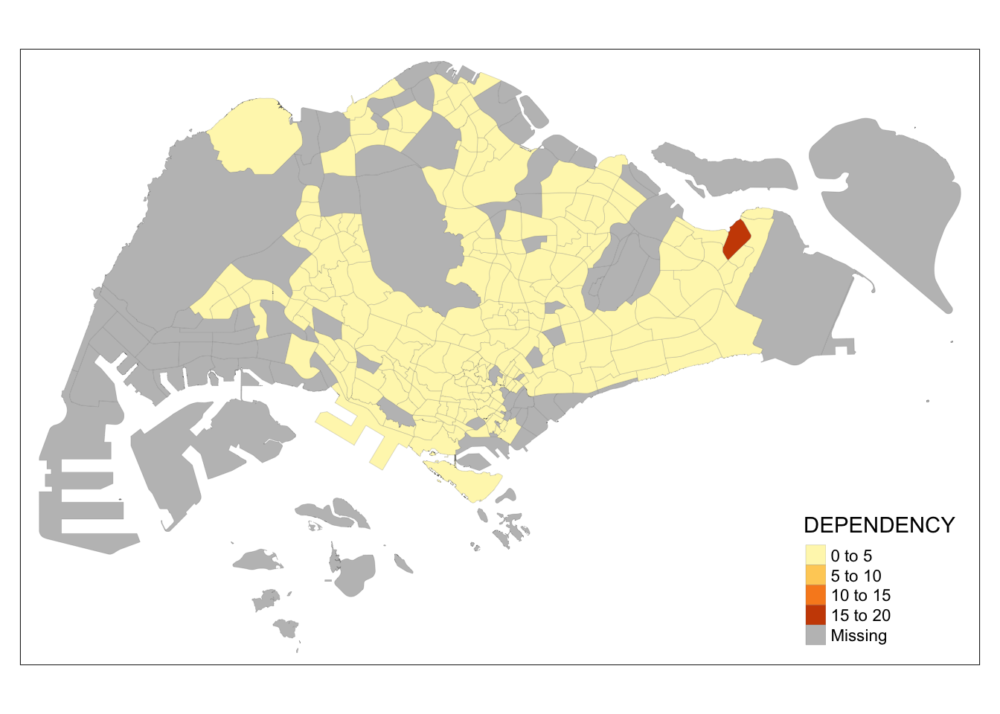
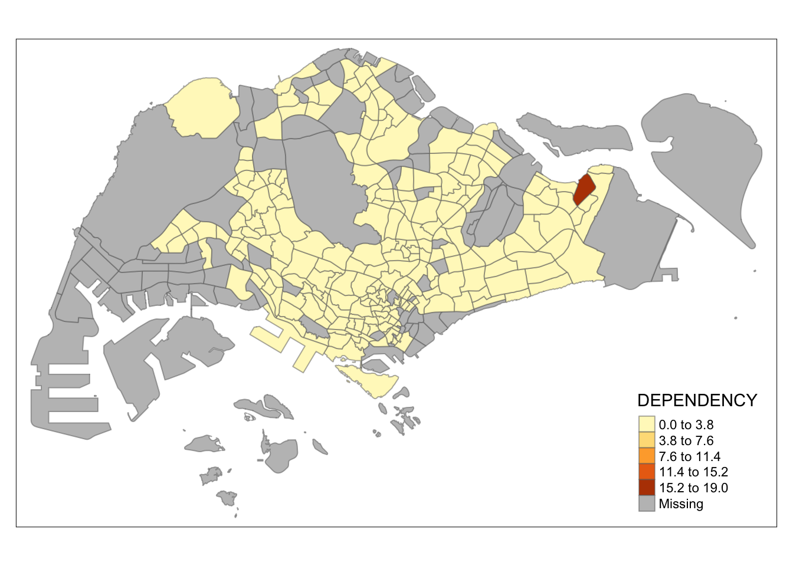
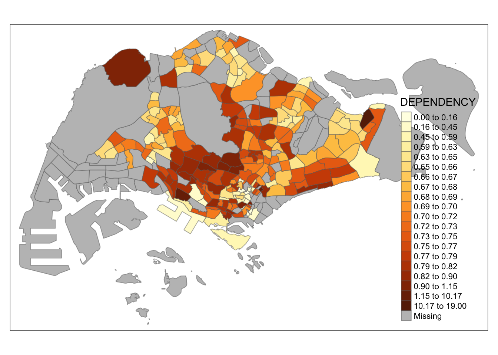
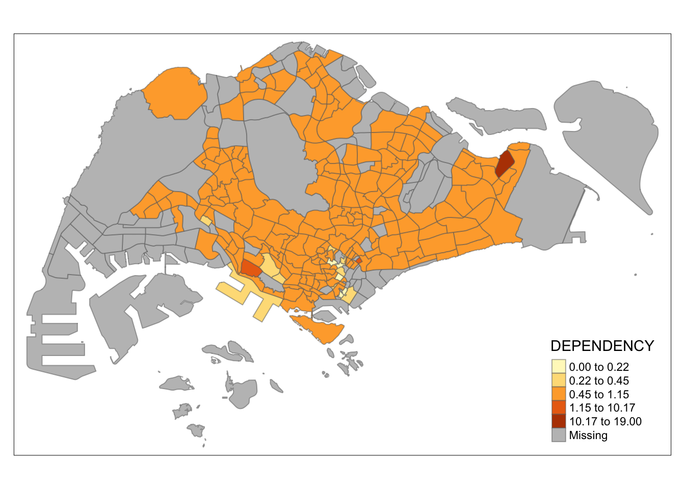
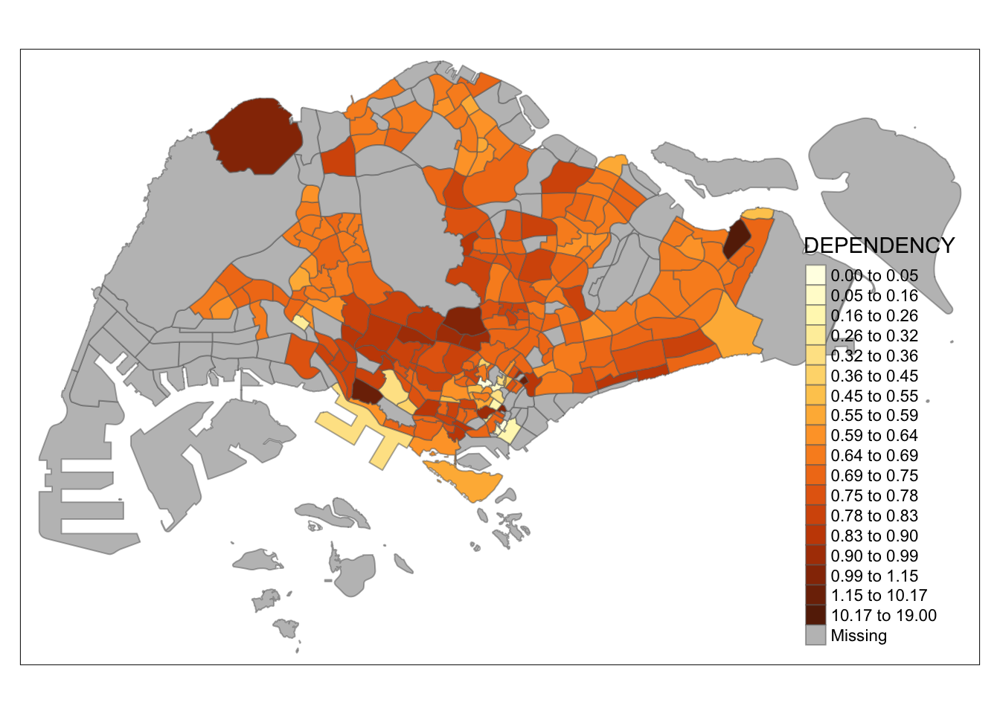
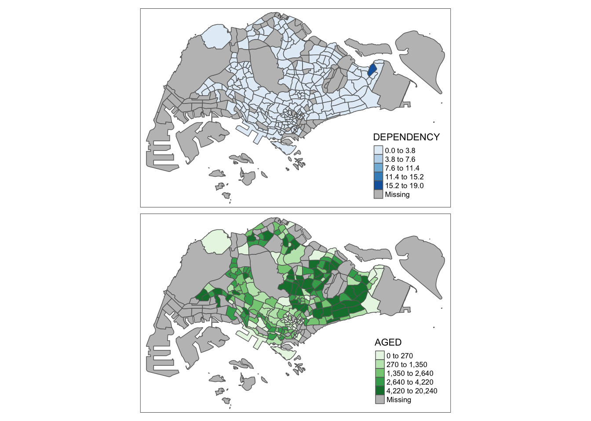

pacman::p_load(sf, tmap, tidyverse)Hands-on Exercise 2: Thematic Mapping & Geovisualisation with R
Overview
Terms & Concepts:
Geovisualisation: The over-arching concept that involve any geographic data visualisation technique
Thematic mapping: Use of map types/symbols to visualise variables that are not naturally visible in a geographical area
Choropleth mapping: Type of thematic mapping to visualise variability across a region using color
I will be using these R packages to build cartographic quality thematic maps:
tmap
tidyverse p
Load the packages into RStudio.
Import Data
Data
The following datasets will be used to create a choropleth map:
Master Plan 2014 SubzoneBoundary(Web) : geospatial data consisting of the geographical boundary of SGP at the planning subzone level
Singapore Residents by Planning Area / Subzone, Age Group, Sex and Type of Dwelling, June 2011-2020 : does not contain any coordinates values, but it’s PA and SZ fields can be used as UIDs to geocode to
MP14_SUBZONE_WEB_PLshapefile
Import Geospatial Data using st_read() from sf
mspz <- st_read(dsn = "data/geospatial", layer = "MP14_SUBZONE_WEB_PL")Reading layer `MP14_SUBZONE_WEB_PL' from data source
`/Users/williamtjw/is415-gaa-williamtjw/resources/Hands-on_Ex/ex2/data/geospatial'
using driver `ESRI Shapefile'
Simple feature collection with 323 features and 15 fields
Geometry type: MULTIPOLYGON
Dimension: XY
Bounding box: xmin: 2667.538 ymin: 15748.72 xmax: 56396.44 ymax: 50256.33
Projected CRS: SVY21mspzSimple feature collection with 323 features and 15 fields
Geometry type: MULTIPOLYGON
Dimension: XY
Bounding box: xmin: 2667.538 ymin: 15748.72 xmax: 56396.44 ymax: 50256.33
Projected CRS: SVY21
First 10 features:
OBJECTID SUBZONE_NO SUBZONE_N SUBZONE_C CA_IND PLN_AREA_N
1 1 1 MARINA SOUTH MSSZ01 Y MARINA SOUTH
2 2 1 PEARL'S HILL OTSZ01 Y OUTRAM
3 3 3 BOAT QUAY SRSZ03 Y SINGAPORE RIVER
4 4 8 HENDERSON HILL BMSZ08 N BUKIT MERAH
5 5 3 REDHILL BMSZ03 N BUKIT MERAH
6 6 7 ALEXANDRA HILL BMSZ07 N BUKIT MERAH
7 7 9 BUKIT HO SWEE BMSZ09 N BUKIT MERAH
8 8 2 CLARKE QUAY SRSZ02 Y SINGAPORE RIVER
9 9 13 PASIR PANJANG 1 QTSZ13 N QUEENSTOWN
10 10 7 QUEENSWAY QTSZ07 N QUEENSTOWN
PLN_AREA_C REGION_N REGION_C INC_CRC FMEL_UPD_D X_ADDR
1 MS CENTRAL REGION CR 5ED7EB253F99252E 2014-12-05 31595.84
2 OT CENTRAL REGION CR 8C7149B9EB32EEFC 2014-12-05 28679.06
3 SR CENTRAL REGION CR C35FEFF02B13E0E5 2014-12-05 29654.96
4 BM CENTRAL REGION CR 3775D82C5DDBEFBD 2014-12-05 26782.83
5 BM CENTRAL REGION CR 85D9ABEF0A40678F 2014-12-05 26201.96
6 BM CENTRAL REGION CR 9D286521EF5E3B59 2014-12-05 25358.82
7 BM CENTRAL REGION CR 7839A8577144EFE2 2014-12-05 27680.06
8 SR CENTRAL REGION CR 48661DC0FBA09F7A 2014-12-05 29253.21
9 QT CENTRAL REGION CR 1F721290C421BFAB 2014-12-05 22077.34
10 QT CENTRAL REGION CR 3580D2AFFBEE914C 2014-12-05 24168.31
Y_ADDR SHAPE_Leng SHAPE_Area geometry
1 29220.19 5267.381 1630379.3 MULTIPOLYGON (((31495.56 30...
2 29782.05 3506.107 559816.2 MULTIPOLYGON (((29092.28 30...
3 29974.66 1740.926 160807.5 MULTIPOLYGON (((29932.33 29...
4 29933.77 3313.625 595428.9 MULTIPOLYGON (((27131.28 30...
5 30005.70 2825.594 387429.4 MULTIPOLYGON (((26451.03 30...
6 29991.38 4428.913 1030378.8 MULTIPOLYGON (((25899.7 297...
7 30230.86 3275.312 551732.0 MULTIPOLYGON (((27746.95 30...
8 30222.86 2208.619 290184.7 MULTIPOLYGON (((29351.26 29...
9 29893.78 6571.323 1084792.3 MULTIPOLYGON (((20996.49 30...
10 30104.18 3454.239 631644.3 MULTIPOLYGON (((24472.11 29...Note: It displays only the first 10 rows (or features) by default. This is a feature of the
sfpackage to prevent overwhelming the console with too much information at once, especially when working with large datasets.
Alternatively, use the one of the following code to explore the spatial data without being limited by the default limit
View(mspz) # opens a separate tab to view the data in RStudiosstr(mspz) # check structureClasses 'sf' and 'data.frame': 323 obs. of 16 variables:
$ OBJECTID : int 1 2 3 4 5 6 7 8 9 10 ...
$ SUBZONE_NO: int 1 1 3 8 3 7 9 2 13 7 ...
$ SUBZONE_N : chr "MARINA SOUTH" "PEARL'S HILL" "BOAT QUAY" "HENDERSON HILL" ...
$ SUBZONE_C : chr "MSSZ01" "OTSZ01" "SRSZ03" "BMSZ08" ...
$ CA_IND : chr "Y" "Y" "Y" "N" ...
$ PLN_AREA_N: chr "MARINA SOUTH" "OUTRAM" "SINGAPORE RIVER" "BUKIT MERAH" ...
$ PLN_AREA_C: chr "MS" "OT" "SR" "BM" ...
$ REGION_N : chr "CENTRAL REGION" "CENTRAL REGION" "CENTRAL REGION" "CENTRAL REGION" ...
$ REGION_C : chr "CR" "CR" "CR" "CR" ...
$ INC_CRC : chr "5ED7EB253F99252E" "8C7149B9EB32EEFC" "C35FEFF02B13E0E5" "3775D82C5DDBEFBD" ...
$ FMEL_UPD_D: Date, format: "2014-12-05" "2014-12-05" ...
$ X_ADDR : num 31596 28679 29655 26783 26202 ...
$ Y_ADDR : num 29220 29782 29975 29934 30006 ...
$ SHAPE_Leng: num 5267 3506 1741 3314 2826 ...
$ SHAPE_Area: num 1630379 559816 160807 595429 387429 ...
$ geometry :sfc_MULTIPOLYGON of length 323; first list element: List of 1
..$ :List of 1
.. ..$ : num [1:157, 1:2] 31496 31981 32333 32362 32362 ...
..- attr(*, "class")= chr [1:3] "XY" "MULTIPOLYGON" "sfg"
- attr(*, "sf_column")= chr "geometry"
- attr(*, "agr")= Factor w/ 3 levels "constant","aggregate",..: NA NA NA NA NA NA NA NA NA NA ...
..- attr(*, "names")= chr [1:15] "OBJECTID" "SUBZONE_NO" "SUBZONE_N" "SUBZONE_C" ...Import Attribute Data using read_csv() from readr package
Import respopagsex2011to2020.csv file into RStudio and save the file into an R dataframe called popdata
popdata <- read_csv("data/aspatial/respopagesexfa2011to2020.csv")Rows: 738492 Columns: 7
── Column specification ────────────────────────────────────────────────────────
Delimiter: ","
chr (5): PA, SZ, AG, Sex, FA
dbl (2): Pop, Time
ℹ Use `spec()` to retrieve the full column specification for this data.
ℹ Specify the column types or set `show_col_types = FALSE` to quiet this message.view(popdata)Data Preparation
Prepare a data table with year 2020 values. The data table should include the variables PA, SZ, YOUNG, ECONOMY ACTIVE, AGED, TOTAL, DEPENDENCY.
YOUNG: age group 0 to 4 until age groyup 20 to 24,
ECONOMY ACTIVE: age group 25-29 until age group 60-64,
AGED: age group 65 and above,
TOTAL: all age group, and
DEPENDENCY: the ratio between young and aged against economy active group
Data Wrangling
Data wrangling is the process of transforming and structuring data from one raw form into a desired format with the intent of improving data quality and making it more consumable and useful for analytics or machine learning.
Data wrangling & transformation functions used:
pivot_wider()of tidyr package, andmutate(),filter(),group_by()andselect()of dplyr package
popdata2020 <- popdata %>%
# group_by -> summarise -> ungroup
filter(Time==2020) %>% # keeps rows where the 'Time' col is 2020
group_by(PA,SZ,AG) %>% # needed for summarise() to work
summarise(POP=sum(Pop)) %>% # summarises GROUPED DATA by summing 'Pop' value in each (PA,SZ,AG) group & stores in new col 'POP'
ungroup() %>% # removes grouping structure, allows us to perform further operations on the data
pivot_wider(names_from = AG,values_from =POP) # reshapes data to WIDE format`summarise()` has grouped output by 'PA', 'SZ'. You can override using the
`.groups` argument.Visualise popdata2020 dataset before calculating age group totals.
View(popdata2020)popdata2020 <- popdata2020 %>%
# CALCULATING AGE GROUP TOTALS
mutate(`YOUNG`=rowSums(.[3:6])+rowSums(.[14])) %>% # CREATES new col 'YOUNG'
mutate(`ECONOMY ACTIVE`=rowSums(.[7:13])+rowSums(.[15])) %>% # CREATES new col `ECONOMY ACTIVE`
mutate(`AGED`=rowSums(.[16:21])) %>% # CREATES new col `AGED`
mutate(`TOTAL`=rowSums(.[3:21])) %>% # CREATES new col `TOTAL`
mutate(`DEPENDENCY` = (`YOUNG` + `AGED`)/`ECONOMY ACTIVE`) %>% # CREATES new col `DEPENDENCY` to calculate dependency ratio
select(`PA`, `SZ`, `YOUNG`, `ECONOMY ACTIVE`, `AGED`, `TOTAL`, `DEPENDENCY`) # determines column order and contents in OUTPUT DATASETJoin attribute and geospatial data
Before we can perform the georelational join, one extra step is required to convert the values in PA and SZ fields to uppercase. This is because the values of PA and SZ fields are made up of upper- and lowercase. On the other, hand the SUBZONE_N and PLN_AREA_N are in uppercase.
popdata2020 <- popdata2020 %>%
mutate_at(.vars = vars(PA,SZ),.funs = list(toupper)) %>%
filter(`ECONOMY ACTIVE` > 0)Next, left_join() of dplyr is used to join the geographical data and attribute table using planning subzone name e.g. SUBZONE_N and SZ as the common identifier.
mpsz_pop2020 <- left_join(mspz,popdata2020,by = c('SUBZONE_N'='SZ')) # c() is a generic func which combines its argsNote that the format of the left data table (
mpszsimple feature dataframe) is preserved in the output, because ofleft_join
write_rds(mpsz_pop2020,'data/rds/mpszpop2020.rds')Choropleth Mapping Geospatial Data Using tmap
Using qtm()
Plot a cartographic standard choropleth map
tmap_mode("plot") # produce a static map; for interactive mode, “view” option should be used.tmap mode set to plottingqtm(mpsz_pop2020, fill = "DEPENDENCY") # map the attribute (i.e. DEPENDENCY)
Using tmap elements
Despite its usefulness of drawing a choropleth map quickly and easily, the disadvantge of qtm() is that it makes aesthetics of individual layers harder to control. To draw a high quality cartographic choropleth map as shown in the figure below, tmap’s drawing elements should be used.
tm_shape(mpsz_pop2020)+
tm_fill('DEPENDENCY',
style = 'quantile',
palette = 'Blues',
title = "Dependency ratio") +
tm_layout(main.title = 'Distribution of Dependency Ratio by planning subzone',
main.title.position = 'center',
main.title.size = 1.2,
legend.height = 0.45,
legend.width = 0.35,
frame = TRUE) +
tm_borders(alpha = 0.5) +
tm_compass(type='8star', size = 2) +
tm_scale_bar() +
tm_grid(alpha =0.2) +
tm_credits('Source: Planning Sub-zone boundary from Urban Redevelopment Authorithy (URA)\n and Population data from Department of Statistics DOS', position = c("left", "bottom"))Plotting the base map
tm_shape() followed by one or more layer elements such as tm_fill() and tm_polygons()
tm_shape(mpsz_pop2020) + tm_polygons()
# tm_shape() is used to define the input data (i.e mpsz_pop2020) and tm_polygons() is used to draw the planning subzone polygonsPlotting a choropleth map using tm_polygons()
Assign the target variable such as Dependency to tm_polygons().
tm_shape(mpsz_pop2020)+tm_polygons("DEPENDENCY")
# The default interval binning used to draw the choropleth map is called “pretty”.
# The default colour scheme used is YlOrRd of ColorBrewer.
# By default, Missing value will be shaded in grey.Plotting a choropleth map using tm_fill() and tm_border()
tm_fill() shades the polygons by using the default colour scheme and tm_borders() adds the borders of the shapefile onto the choropleth map
Without borders,
tm_shape(mpsz_pop2020)+tm_fill("DEPENDENCY")
With borders,
tm_shape(mpsz_pop2020)+tm_fill("DEPENDENCY") +
tm_borders(lwd = .1, alpha = 1) # adds the boundary of the planning subzones
# The alpha argument is used to define transparency number between 0 (totally transparent) and 1 (not transparent). By default, the alpha value of the col is used (normally 1).
# Arguments for tm_borders():
# col = border colour,
# lwd = border line width. The default is 1, and
# lty = border line type. The default is “solid”.Data classification methods of tmap
Most choropleth maps employ some methods of data classification. The point of classification is to take a large number of observations and group them into data ranges or classes.
tmap provides a total ten data classification methods, namely:
(click to jump to corresponding section)
fixed,
[sd],
[equal],
[pretty (default],
[quantile],
[kmeans],
[hclust],
[bclust],
bclust, and
[jenks].
To define a data classification method, the style argument of tm_fill() or tm_polygons() will be used.
Plotting choropleth maps with built-in classification methods (n=5 and n=20)
quantile
tm_shape(mpsz_pop2020)+
tm_fill("DEPENDENCY",
n = 5, # 5 classes
style = "quantile") +
tm_borders(alpha = 0.5)tm_shape(mpsz_pop2020)+
tm_fill("DEPENDENCY",
n = 20, # 20 classes
style = "quantile") +
tm_borders(alpha = 0.5)equal
tm_shape(mpsz_pop2020)+
tm_fill("DEPENDENCY",
n = 5,
style = "equal") +
tm_borders(alpha = 0.5)
tm_shape(mpsz_pop2020)+
tm_fill("DEPENDENCY",
n = 20, # 20 classes
style = "equal") +
tm_borders(alpha = 0.5)Notice that the distribution of quantile data classification method are more evenly distributed then equal data classification method.
sd
tm_shape(mpsz_pop2020)+
tm_fill("DEPENDENCY",
n = 5,
style = "sd") +
tm_borders(alpha = 0.5)tm_shape(mpsz_pop2020)+
tm_fill("DEPENDENCY",
n = 20, # 20 classes
style = "sd") +
tm_borders(alpha = 0.5)pretty (default)
tm_shape(mpsz_pop2020)+
tm_fill("DEPENDENCY",
n = 5,
style = "pretty") +
tm_borders(alpha = 0.5)
tm_shape(mpsz_pop2020)+
tm_fill("DEPENDENCY",
n = 20, # 20 classes
style = "pretty") +
tm_borders(alpha = 0.5)kmeans
tm_shape(mpsz_pop2020)+
tm_fill("DEPENDENCY",
n = 5,
style = "kmeans") +
tm_borders(alpha = 0.5)tm_shape(mpsz_pop2020)+
tm_fill("DEPENDENCY",
n = 20, # 20 classes
style = "kmeans") +
tm_borders(alpha = 0.5)
hclust
tm_shape(mpsz_pop2020)+
tm_fill("DEPENDENCY",
n = 5,
style = "hclust") +
tm_borders(alpha = 0.5)tm_shape(mpsz_pop2020)+
tm_fill("DEPENDENCY",
n = 20, # 20 classes
style = "hclust") +
tm_borders(alpha = 0.5)bclust
tm_shape(mpsz_pop2020)+
tm_fill("DEPENDENCY",
n = 5,
style = "bclust") +
tm_borders(alpha = 0.5)
Committee Member: 1(1) 2(1) 3(1) 4(1) 5(1) 6(1) 7(1) 8(1) 9(1) 10(1)
Computing Hierarchical Clusteringtm_shape(mpsz_pop2020)+
tm_fill("DEPENDENCY",
n = 20, # 20 classes
style = "bclust") +
tm_borders(alpha = 0.5)
Committee Member: 1(1) 2(1) 3(1) 4(1) 5(1) 6(1) 7(1) 8(1) 9(1) 10(1)
Computing Hierarchical Clusteringfisher
tm_shape(mpsz_pop2020)+
tm_fill("DEPENDENCY",
n = 5,
style = "fisher") +
tm_borders(alpha = 0.5)
tm_shape(mpsz_pop2020)+
tm_fill("DEPENDENCY",
n = 20, # 20 classes
style = "fisher") +
tm_borders(alpha = 0.5)jenks
tm_shape(mpsz_pop2020)+
tm_fill("DEPENDENCY",
n = 5,
style = "jenks") +
tm_borders(alpha = 0.5)tm_shape(mpsz_pop2020)+
tm_fill("DEPENDENCY",
n = 20, # 20 classes
style = "jenks") +
tm_borders(alpha = 0.5)Plotting choropleth map with custom break
For all the built-in styles, the category breaks are computed internally. To override these defaults, set the breakpoints using the breaks argument in tm_fill(). In tmap the breaks include a minimum and maximum. Hence to have n categories, n+1 elements must be specified in the breaks option in ascending order.
Compute and display the descriptive statistics of DEPENDENCY field
summary(mpsz_pop2020$DEPENDENCY) Min. 1st Qu. Median Mean 3rd Qu. Max. NA's
0.0000 0.6540 0.7063 0.7712 0.7657 19.0000 92 With reference to the results above, set break point at 0.60, 0.70, 0.80, and 0.90.
Include a minimum and maximum at 0 and 1.00.
Hence
c(0, 0.60, 0.70, 0.80, 0.90, 1.00)
Plot the choropleth map
tm_shape(mpsz_pop2020)+
tm_fill("DEPENDENCY",
breaks = c(0, 0.60, 0.70, 0.80, 0.90, 1.00)) +
tm_borders(alpha = 0.5)Warning: Values have found that are higher than the highest breakNote: Values outside the breakpoints that may be essential for analysis
Color Scheme
tmap supports colour ramps either defined by the user or a set of predefined colour ramps from the RColorBrewer package
ColourBrewer palette
To change the colour, assign the preferred colour to palette argument of tm_fill()
tm_shape(mpsz_pop2020)+
tm_fill("DEPENDENCY",
n = 6,
style = "quantile",
palette = "Blues") +
tm_borders(alpha = 0.5)Notice that the choropleth map is shaded in green. To reverse the colour shading, add a “-” prefix.
tm_shape(mpsz_pop2020)+
tm_fill("DEPENDENCY",
style = "quantile",
palette = "-Greens") + # lower data values = deeper green shading
tm_borders(alpha = 0.5)Map layout
Map layout refers to the combination of all map elements into a cohensive map. Map elements include map objects, the title, the scale bar, the compass, margins and aspects ratios. Colour settings and data classification methods covered in the previous section relate to the palette and break-points are used to affect how the map looks.
Map Legend
In tmap, several legend options are provided to change the placement, format and appearance of the legend.
tm_shape(mpsz_pop2020)+
tm_fill('DEPENDENCY',
style = 'jenks',
palette = 'Blues',
legend.hist = TRUE,
legend.is.portrait = TRUE,
legend.hist.z = 0.1) +
tm_layout(main.title = 'Distribution of Dependency Ratio by planning subzone \n(Jenks classification)',
main.title.position = 'center',
main.title.size = 1,
legend.height = 0.45,
legend.width = 0.35,
legend.outside = FALSE,
legend.position = c('right', 'bottom'),
frame = FALSE) +
tm_borders(alpha = 0.5)Map style
tmap allows a wide variety of layout settings to be changed. They can be called by using tmap_style()
tm_shape(mpsz_pop2020)+
tm_fill("DEPENDENCY",
style = "quantile",
palette = "-Greens") +
tm_borders(alpha = 0.5) +
tmap_style("classic")tmap style set to "classic"other available styles are: "white", "gray", "natural", "cobalt", "col_blind", "albatross", "beaver", "bw", "watercolor" Note: other available styles are: “white”, “gray”, “natural”, “cobalt”, “col_blind”, “albatross”, “beaver”, “bw”, “watercolor”
Cartographic Furniture
tmap also also provides arguments to draw other map furniture such as compass, scale bar and grid lines
tm_compass(), tm_scale_bar() and tm_grid() are used to add compass, scale bar and grid lines onto the choropleth map
tm_shape(mpsz_pop2020)+
tm_fill("DEPENDENCY",
style = "quantile",
palette = "Blues",
title = "No. of persons") +
tm_layout(main.title = "Distribution of Dependency Ratio \nby planning subzone",
main.title.position = "center",
main.title.size = 1.2,
legend.height = 0.45,
legend.width = 0.35,
frame = TRUE) +
tm_borders(alpha = 0.5) +
tm_compass(type="8star", size = 2) +
tm_scale_bar(width = 0.15) +
tm_grid(lwd = 0.1, alpha = 0.2) +
tm_credits("Source: Planning Sub-zone boundary from Urban Redevelopment Authorithy (URA)\n and Population data from Department of Statistics DOS",
position = c("left", "bottom"))To reset the default style,
tmap_style("white")
Drawing Small Multiple Choropleth Maps
Small multiple maps, also referred to as facet maps, are composed of many maps arrange side-by-side, and sometimes stacked vertically. Small multiple maps enable the visualisation of how spatial relationships change with respect to another variable, such as time.
In tmap, small multiple maps can be plotted in three ways:
Assign multiple values to at least one of the asthetic arguments
- Define
ncolsintm_fill()
tm_shape(mpsz_pop2020)+
tm_fill(c("YOUNG", "AGED"),
style = "equal",
palette = "Blues") +
tm_layout(legend.position = c("right", "bottom")) +
tm_borders(alpha = 0.5) +
tmap_style("white")tmap style set to "white"other available styles are: "gray", "natural", "cobalt", "col_blind", "albatross", "beaver", "bw", "classic", "watercolor" - Assign multiple values to at least one of the aesthetic arguments
tm_shape(mpsz_pop2020)+
tm_polygons(c("DEPENDENCY","AGED"),
style = c("equal", "quantile"),
palette = list("Blues","Greens")) +
tm_layout(legend.position = c("right", "bottom"))
Define a group-by variable in tm_facets()
- Create multiple small choropleth maps using
tm_facets().
tm_shape(mpsz_pop2020) +
tm_fill("DEPENDENCY",
style = "quantile",
palette = "Blues",
thres.poly = 0) +
tm_facets(by="REGION_N",
free.coords=TRUE,
drop.shapes=TRUE) +
tm_layout(legend.show = FALSE,
title.position = c("center", "center"),
title.size = 20) +
tm_borders(alpha = 0.5)Warning: The argument drop.shapes has been renamed to drop.units, and is
therefore deprecatedCreate multiple stand-alone maps with tmap_arrange().
youngmap <- tm_shape(mpsz_pop2020)+
tm_polygons("YOUNG",
style = "quantile",
palette = "Blues")
agedmap <- tm_shape(mpsz_pop2020)+
tm_polygons("AGED",
style = "quantile",
palette = "Blues")
tmap_arrange(youngmap, agedmap, asp=1, ncol=2)Mapping Spatial Object Meeting a Selection Criterion
Use selection funtion to map spatial objects meeting the selection criterion
tm_shape(mpsz_pop2020[mpsz_pop2020$REGION_N=="CENTRAL REGION",])+
tm_fill("DEPENDENCY",
style = "quantile",
palette = "Blues",
legend.hist = TRUE,
legend.is.portrait = TRUE,
legend.hist.z = 0.1) +
tm_layout(legend.outside = TRUE,
legend.height = 0.45,
legend.width = 5.0,
legend.outside.size = 0.5, # ~0.5
legend.position = c("right", "bottom"),
frame = FALSE) +
tm_borders(alpha = 0.5)Warning in pre_process_gt(x, interactive = interactive, orig_crs =
gm$shape.orig_crs): legend.width controls the width of the legend within a map.
Please use legend.outside.size to control the width of the outside legendWarning:
legend.widthcontrols the width of the legend within a map. Please uselegend.outside.sizeto control the width of the outside legend
Readings
| Reference | Usage | Pros | Cons | Applications | Notes |
|---|---|---|---|---|---|
| Proportional Symbols | Scale symbols proportionate to data values |
|
|
|
|
| Choropleth Maps | Color intensity proportionate to data value |
|
|
|
|
defined as grouping a large number of data values into ranges, allowing for data categorisation and subsequent visualisation on a map
Purpose
minimize misleading representations or patterns
minimize within-group variance; maximize between-group variance (also method)
Methods
Tools (for future reference)
dplyr cheatsheets